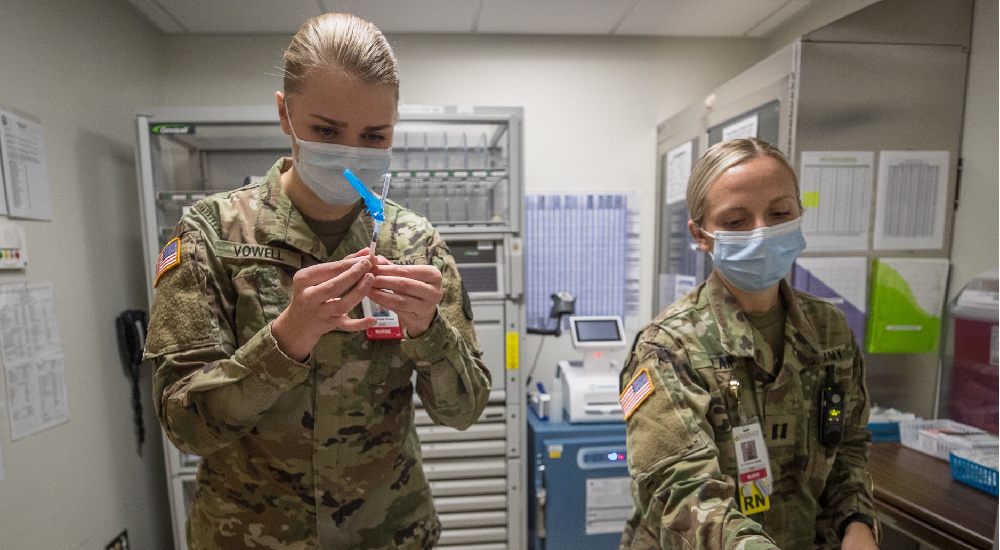

Caractéristiques épidémiologiques de la phase d'émergence
March 16, 2018 | Posted by Owner | Filed under templates, internet

Les bilans et chiffres ci-dessous sont à interpréter au regard des spécificités démographiques de la Chine. Sa pyramide des âges n'est, par exemple, pas comparable à celle de la France, mais proche de celle de l'Allemagne. Le sex-ratio y défavorise les femmes (113 garçons pour 100 filles à la naissance), sauf au-dessus de 65 ans (100 femmes pour 91 hommes) ; et la part du nombre d'enfants dans la population est très basse : en 2019 le taux de natalité y était de 10,4 naissances pour mille habitants (le plus bas depuis 70 ans) et le nombre de naissances (14,6 millions en 2019, soit 4 % de moins qu'en 2018) est le plus bas depuis près de 60 ans[31] ;
Les chiffres ci-dessous ne concernent que des malades confirmés en Chine, de source officielle (44 672 cas pour le premier bilan) ; il s'agit de la frange des malades les plus symptomatiques (donc plus facilement détectables) ; ces chiffres peuvent évoluer ; ils seraient probablement différents dans un pays à population très jeune ou avec un sex-ratio plus équilibré.